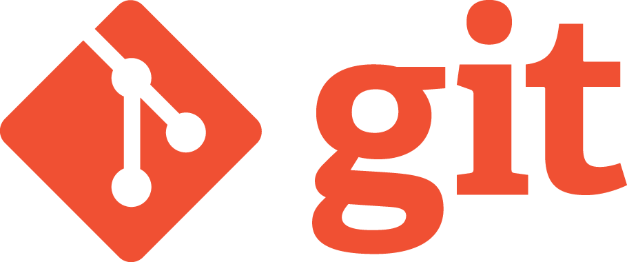
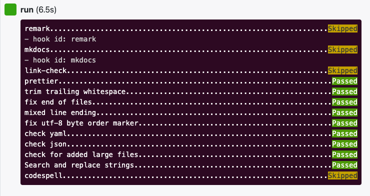
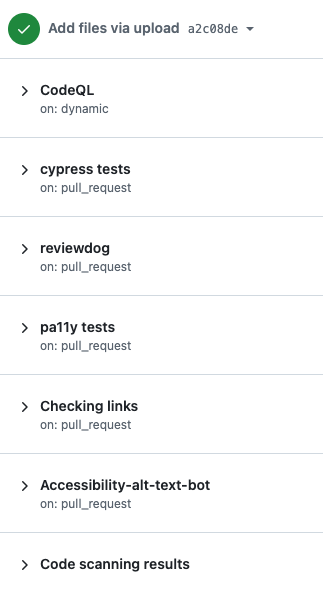
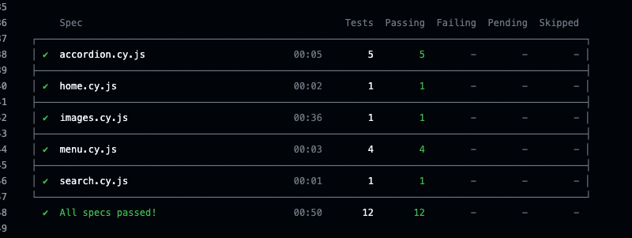
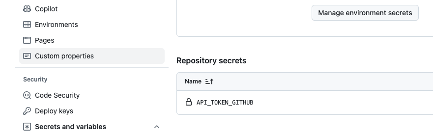

By Daniel Mundra, Associate Director of Drupal, with Dr. Eryn Cangi, planetary scientist at University of Colorado Boulder

You know and love the basics: git pull, git push, git commit, git rebase, and so on. You use them on the daily. If you get into some minor trouble, you can find your way around Stack Exchange and generally solve your own problems…most of the time. Sometimes you might get into a tricky situation — a botched merge conflict resolution, a dropped stash. Maybe you’ve lost a bit of work — not a lot, but enough to be annoying. Maybe you’re a junior developer just out of college, a scientist developing computational models of natural systems, or a data analyst working for a single firm or a couple nonprofits. You know your workflow could stand to be more efficient, and you aspire to be as adept as people you see working on huge software projects with dozens of contributors. Time to level up your git ability with automation!
In April, I co-created a presentation with my friend and former colleague Dr. Eryn Cangi on showing and demoing best git practices to space research scientists. Eryn covered the basics of git and general recommendations, and since I have been using git for 14+ years, I decided to focus on the next thing one should do once they have their work in git (or any version control system): automation.
Eryn sometimes comes to me for advice working with Git, which she uses to maintain models and data analysis software used in her work as a planetary scientist. But she laments that sometimes she has to expend ‘precious research time’ on managing the git repository — figuring out how to solve mistakes in commits or weird branching errors, or patching uncaught breaking changes. These are classic challenges for folks who have an intermediate level of understanding of Git and are ready to advance to the next level and start using automation to make their workflow more efficient. In this article, we share some approaches and tools that will let you save even more ‘precious time’ — whether you’re a junior software developer, a scientist, or anyone else who (cautiously) uses version control at an intermediate level for their work.
That fun back and forth points to an important concept: “precious time.” Many people have embraced version control in one form or the other to track their code. You also see a form of version control in most modern systems like Google Docs (version history). That tracking saves precious time not having to worry about backing up your changes and not having to manage non-automatic forms of backup. Now that you have version control, don’t stop there, embrace the continuous improvement by incorporating automation and saving that “precious time.”
Linting tools
You may be familiar with pushing your code to remotes, but automation can help by scanning for issues before it’s committed. That’s where linting comes in. According to Wikipedia:
“Lint is the computer science term for a static code analysis tool used to flag programming errors, bugs, stylistic errors and suspicious constructs. The term originates from a Unix utility that examined C language source code. A program which performs this function is also known as a ‘linter’ or ‘linting tool.’”
Most if not all programming and markup languages have standard rules also known as style guides that they recommend. Also frameworks like Drupal build upon those rules with additional rules. Rules like indenting, using spaces or tabs, restricting line width to 80 columns, and so on. Following those rules will help catch errors and more importantly makes reviewing your code by yourself or others easier as you are not distracted by content-less inconsistencies. Doing that reduces troubleshooting time (avoiding errors like a missing semicolon) and also reduces time spent reviewing changes that are distracting.
We have all done this manually, but why not automate it with linting tools? Modern text and code editors either have built-in features or add-on plugins that will highlight issues and also potentially just fix them like trailing whitespace. When it comes to git, use a tool like pre-commit that can run scripts on your commits to run linting tools to flag issues when you try to commit the changes. Combine pre-commit with tools like Prettier, ESLint, textlint, or remark and it will help you format text and code automatically.

Pre-commit once set up locally can also be run on GitHub and GitLab either by using their automation tools (GitHub Actions or GitLab CI/CD) or the CI available on those services (note pre-commit.ci currently only supports GitHub right now). We are also seeing services like GitHub roll out their own tool checking your code for issues and flagging them for you. It is called CodeQL. Combine all these tools, automate your linting tool tasks, and save precious time.
Issues and pull (or merge) requests
Tools like GitHub, GitLab, and Gitea provide project management features like issues, pull requests, projects, and more. These are not directly available in git but are commonplace additions on platforms that host your git repositories. So, assuming your work is now tracked in git, automatically linted, and pushed up to a git host, how can you use automation alongside tools like issues and pull (GitHub terminology)/merge (GitLab) requests?
Issues essentially allow you to create to-do lists for your code and you can then connect the git commits to those issues using identifiers like the issue ID. One benefit of issues is that while your commit message can have a lot of details you probably want to put back and forth and detailed discussions in issues. In GitHub and GitLab you can automatically close issues by linking commits and pull requests to issues and then using specific keywords. The awesome benefit of that is the satisfaction you get from closing issues by pushing up and merging your changes.
While issues are in some sense simple, pull requests are definitely a more important practice to get comfortable with. Generally a lot of automation like linting tools, running scripts, providing a demo site with your changes are kicked off in a pull request. Even for your own repositories and changes you want to use pull requests and not just push up to the main branch. You can also automate that requirement by using branch protections to prevent direct commits to the main branch. Creating a pull request forces you to create a branch, push that up and only merge after you and others have reviewed the changes in that pull request.

Collaboration happens in pull requests. Similarly contributions happen in issues and pull requests. You likely will ask someone to review your changes and you want to make it easier for them to save that precious time. So the goal would be to run all the various automation scripts so that they can confirm your changes are good and try the changes without needing to pull the changes down locally (more details in the next section). When you contribute to other repos that you use in your project or even if it is a tool or website that you use and the source is available in the repository hosted on GitHub or GitLab, you will be doing that with issues and pull requests. I encourage you to contribute back whenever you can even if it is just reporting something you might think is a bug and also a code change if you can fix something.
Using those project management tools will help keep the momentum of your code going and also serve as an avenue for others to contribute to it as well.
Tests and collaboration
As mentioned above, pull requests are an important place where collaboration happens. In pull requests to repos with multiple collaborators, peers can review your changes, and you in turn review your peers’ changes. Automation can support this by letting you demonstrate that your code works directly in GitHub.
That approach to reviewing and testing your code is likely a written set of steps to verify the changes do what they are supposed to. Hopefully you are also thinking of additional steps or cases to test as well. Let a server execute those steps. That gives you and your reviewer a guarantee that those steps are working and also a set of errors if the script fails. Testing (unit tests, functional tests, and so on) is a larger topic within code authorship, and definitely an important addition to any code. Here we are introducing a small starting point to writing a script that can serve as a test which is also run automatically. Following that, remember to build test code like regular code: in small chunks over time.
If your repository lives in GitHub, consider using Actions, it is free for open source and you have access to many plugins you can quickly connect together to build scripts, run tests, and other checks that help you validate your changes and make it easier for others to do that as well. With Actions, your collaborator might not have to check out your changes locally to test them, they can do all of it in GitHub. This takes care of routine/repeated tasks, saving that precious time.
Linting automation, closing issues, and merging pull requests has been very satisfying, but after writing and seeing large numbers of tests pass (seeing all greens) I get an even bigger sense of satisfaction.
Additional automations to consider that fit into testing are having it check when links are broken, when other projects/packages you use are out of date (also update those packages automatically), and so on. Here are a few of those tools I have used:
- GitHub — gjtorikian/html-proofer: Test your rendered HTML files to make sure they’re accurate
- GitHub — UmbrellaDocs/linkspector: Uncover broken links in your content
- Keep all your packages up to date with Dependabot — The GitHub Blog
- GitHub — reviewdog/reviewdog: 🐶 Automated code review tool integrated with any code analysis tools regardless of programming language

Secrets management
From What is a secret?
“A secret is a piece of sensitive information. For example, an API key, password, or any type of credential that you might use to access a confidential system.”
Depending on the project, to benefit from testing and automation you might need to bring in data from various sources. Potentially it can be dummy data that will make it easier, but if you need real proprietary or otherwise restricted data, you will likely use secrets to access it. Don’t put those secrets in your code in plain text! If you do that and it ends up in a file which is pushed to a public repository, you will have to remove it from the entire git history (do-able but a scary process). GitHub provides a secrets scanning tool that can help at least detect and flag it. To use secrets in automations you can define them as variables and then specify them securely in the repository settings. GitHub repository settings have a “Secrets and variables” section to store these values for secure use with automation tools. Do also make sure that if you are logging your scripts that it does not inadvertently show the values of the keys in the logs.

Conclusion
It is great to see so many people using version control, and GitHub is showing that the number increases year on year. I recommend going beyond just using version control, and adding more to your toolbox, especially in terms of automation. Automation does take time but just like your skills improve with using git (like being comfortable with branches, commits, reverts, and so on) you want to keep building skills with automation. What you have used in one repository will also be useful in other repositories. So give it a try and keep aiming to save that precious time.
Check out my older posts on how we automated accessibility testing and other tools into our version control:
- How I do automated accessibility testing for my website | Opensource.com
- Automated accessibility testing: Leveraging GitHub Actions and pa11y-ci with axe
- How we scale inclusive website content with automated testing and open source tools
Thank you to Dr. Eryn Cangi for collaborating on this post, and helping me share this topic.
Thank you to Ari Hylas, Adrian Cooke, and Mike Gifford for your support, thoughts, and feedback.